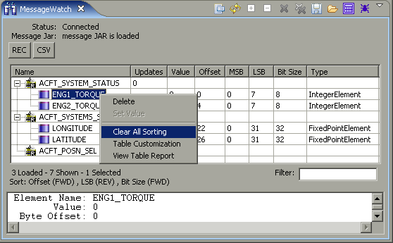

Message View Sort
What it is
Sorts the data in the Message Watch table by click on the column heading.
How to do it
- Click on the first column heading desired to be sorted.
- Notice the "Sort:" line shown below the table.
- To reverse the sort order, click the column heading a 2nd time.
- To sort by multiple columns, hold the CTRL key while clicking on
additional columns.
- To remove the sorting, right-click anywhere in the table and choose
"Clear All Sorting"
